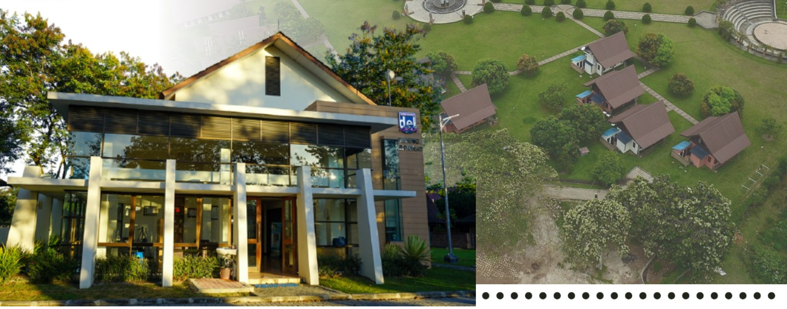
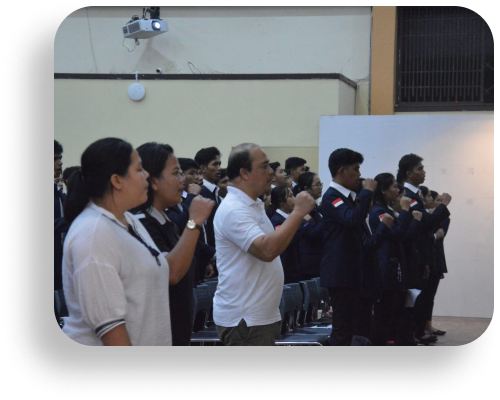
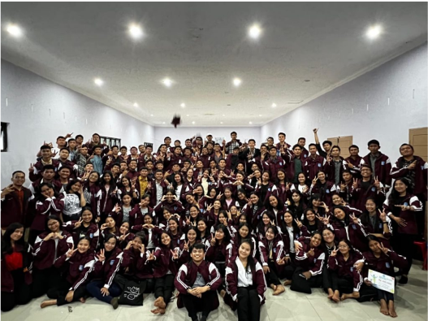
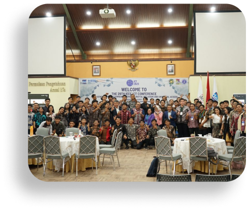
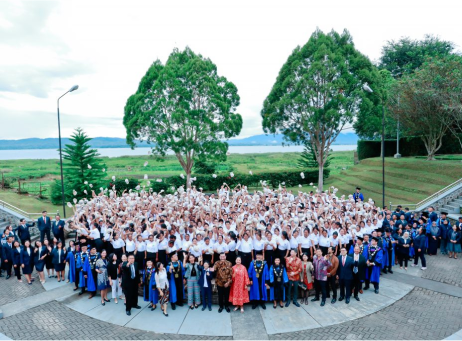
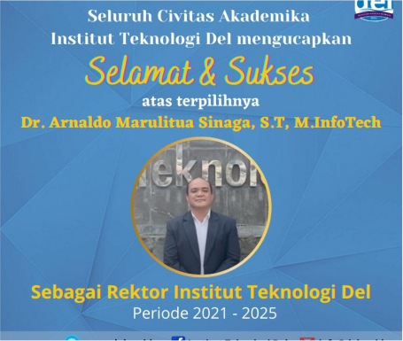
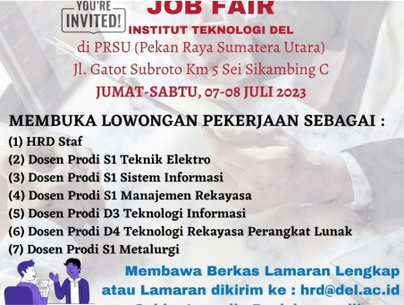
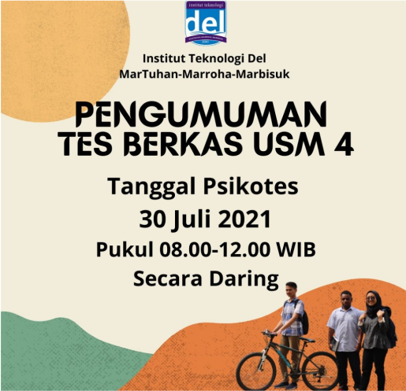

Institut Teknologi Del
Martuhan, Marroha, Marbisuk
Berita Terkini
Rapat Koordinasi Keluarga Mahasiswa Organisasi IT Del Periode
2023/2024

Pada Hari Jumat, 27 Oktober 2023 diadakan Rapat Koordinasi KM-IT Del
Periode 2023/2024 yang dihadiri oleh Bapak Dr. Arnaldo Marulitua
Sinaga ...
399 Mahasiswa IT Del Mengikuti Retreat untuk Meningkatkan Karakter
3M

Sebagai bentuk untuk meningkatkan karakter Del yakni 3M (MarTuhan,
Marroha, Marbisuk) mahasiswa IT Del angkatan 2021 sebanyak 399 orang
...
IT Del Menjadi Tuan Rumah 29th IEEE ICT Conference
Institut Teknologi Del berperan sebagai host dalam International
Conference on Telecommunications (ICT) untuk edisi yang ke-29. ICT
merupakan ...

Sosialisasi Data Diri untuk
PDDikti dan Peraturan
Kampus kepada Mahasiswa
Angkatan 2023
Pada hari Kamis, 2 November 2023 Institut Teknologi Del mengadakan
sosialisasi yang penting dan informatif, yang bertujuan untuk
memberikan ...
15 November 2023
Sitoluama, IT Del
Wisuda 398 Lulusan Institut Teknologi Del
Pada Hari Sabtu 23 September 2023, Institut Teknologi Del
melaksanakan Wisuda untuk 398 Mahasiswa Sarjana dan Diploma. Turut
hadir Bapak Dr. Honoris Causa Ir. Airlangga Hartarto, MBA, MMT
(Menteri Koordinator Bidang Perekonomian Republik Indonesia),
Bapak Rionald Silaban (Direktorat Jendral ...

Pengumuman Rektor terpilih Institut Teknologi Del Periode
2021-2025
Seluruh Civitas Akademika Institut Teknologi Del mengucapkan Selamat Kepada Bapak Dr. Arnaldo Marulitua Sinaga, S.T., M.InfoTech. atas terpilihnya sebagai Rektor Institut Teknologi Del Periode 2021 – 2025.
Semoga amanah yang diemban mampu menjadikan segenap sisi Institut Teknologi Del menjadi ...

Job Fair Institut Teknologi Del di Pekan Raya Sumatera Utara
(PRSU) 2023
Horas Warga Sumatera Utara!!Dinas Ketenagakerjaan Provinsi
Sumatera Utara kini bekerja sama dengan beberapa perusahaan dan
institut yang menyediakan lowongan pekerjaan. Salah satunya adalah
Institut Teknologi Del. Melalui acara JOB FAIR 2023 ini akan
menjadi kesempatan baik untuk Anda bertemu ...

UJIAN SARINGAN MASUK INSTITUT TEKNOLOGI DEL (USM IT DEL) T.A.
2021/2022 JALUR USM4
Berdasarkan hasil evaluasi tahap pertama peserta jalur USM4 Tahun
2021 yang mencakup seleksi nilai UTBK, mereka yang namanya
tercantum pada Daftar Peserta Jalur USM4 Tahun 2021 yang
dinyatakan LULUS SELEKSI NILAI UTBK dan dipanggil untuk mengikuti
SELEKSI PSIKOTES adalah sebagai berikut http:// ...

Pengumuman